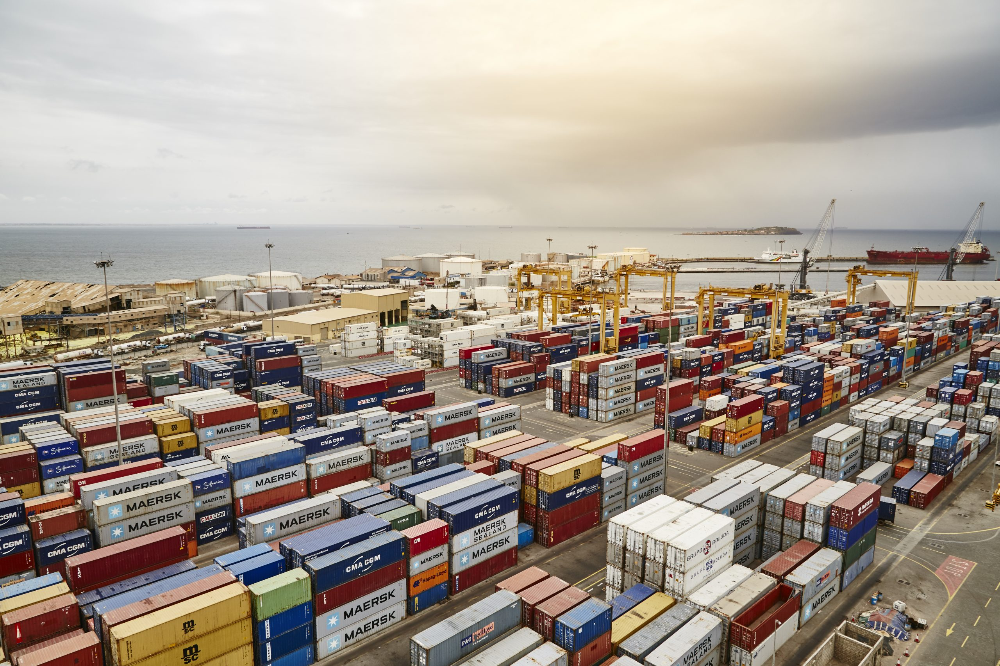

Port autonome de Dakar
Le port de Dakar est l’un des plus importants d’Afrique de l’Ouest. Il joue un rôle essentiel dans le commerce maritime du Sénégal et de toute la région.
← Retour à la galerieLe port de Dakar est l’un des plus importants d’Afrique de l’Ouest. Il joue un rôle essentiel dans le commerce maritime du Sénégal et de toute la région.
← Retour à la galerie